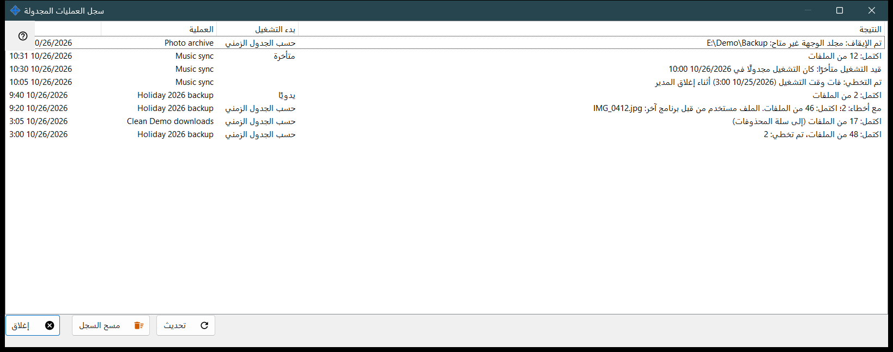
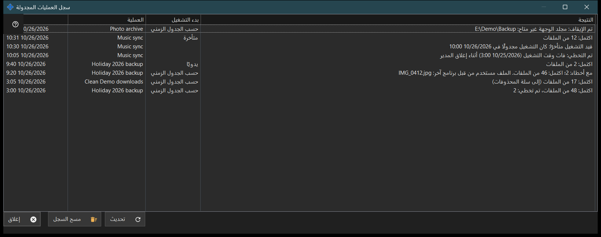

سجل العمليات المجدولة
الغرض من هذه النافذة
يعرض آخر عمليات التشغيل وملاحظات عمليات الملفات المجدولة كما هي مسجلة في السجل. تُثبَّت عمليات الملفات المجدولة مع Share Manager - في حزمة واحدة ودون تنزيل منفصل ودون خدمة Windows - وتعمل ما دام Share Manager يعمل في جلسة تسجيل دخولك؛ ولا تحتاج إلى مشاركة مجلدات ولا إلى خادم ولا إلى منفذ مفتوح ولا إلى صلاحيات المسؤول. يُفتح من الزر السجل.. في نافذة العمليات المجدولة وفي صفحة عمليات الملفات المجدولة بإعدادات Share Manager.


بهذا الترتيب
- اقرأ القائمة: الوقت والعملية وبدء التشغيل والنتيجة.
- وسّع النافذة إذا كانت النتيجة طويلة.
- اضغط تحديث لقراءة السجل مجددًا.
- اضغط مسح السجل وأكّد لإفراغه.
- اضغط إغلاق.
عناصر النافذة
الأعمدة
الوقت، والعملية (اسمها)، وبدء التشغيل، والنتيجة. بدء التشغيل هو حسب الجدول الزمني أو يدويًا أو تشغيل الكل أو متأخرة، ويبقى فارغًا في الملاحظة. تقرأ النافذة آخر 200 مدخل في السجل عند فتحها وعند تحديث، ولا تتحدث من تلقاء نفسها.
نتائج التشغيل
اكتمل: N من الملفات، ويُضاف إليه تم تخطي: M عند استبعاد بعضها، و(إلى سلة المحذوفات) في عمليات الحذف. مع أخطاء: N؛ اكتمل: M من الملفات، يليه السبب الأول، مثل ملف قيد الاستخدام أو لا وصول أو ملف غير موجود أو تغيّر أو قرص ممتلئ. تم الإيقاف: .. عندما يوقف عائق التشغيل، مثل مجلد لا يمكن الوصول إليه أو مورد بلا كلمة مرور محفوظة أو بمفتاح خادم غير مؤكد أو جهاز غير متصل. لم يبدأ التشغيل: .. عند رفض التعريف، وتم التخطي: .. وتمت المقاطعة. يحفظ السجل رموزًا لا نص الخطأ الخام، لذا تتبع الصياغة اللغة الحالية. عندما يكون أحد الجانبين Google Drive، قد يكون السبب أيضًا انقطاع الاتصال بـ Google Drive أو نفاد المساحة عليه أو تسجيل الخروج منه أو ملفًا أكبر من حد الحزمة.
الملاحظات
الصف الخالي من بدء التشغيل ملاحظة: تم التخطي: فات وقت التشغيل (..) أثناء إغلاق المدير؛ قيد التشغيل متأخرًا: كان التشغيل مجدولًا في ..؛ تم الرفض: هذه العملية قيد التنفيذ بالفعل أو في انتظار دورها؛ تم الاستئناف: زال سبب التوقف.
مسح السجل
يسأل: هل تريد مسح سجل العمليات المجدولة؟ لن تتغير العمليات نفسها ولا جدولها الزمني. والإجابة الافتراضية هي لا. يفرغ هذا السجل وحده؛ وتبقى العمليات وجداولها. الزر معطّل ما دام السجل فارغًا.